Sao Paulo, Brazil (2014)

My best friend from high school had moved back to Brazil during our
freshman year and I missed her a lot. I didn’t have many friends
growing up, so when my mom asked me what I wanted for my graduation
present, I didn’t hesitate. I wanted a trip to visit my best friend.
I planned this trip for a major part of my senior year, and I would
often look at pictures of what the country looked like. I thought
maybe it couldn’t be much different than Colombia except for the
different language, and I feel like I was somewhat right.
I took a United flight sometime in June, and I remember it
took almost 10 hours to get there on a non-stop flight! During the
flight, they showed pictures of the many different parts of Brazil
and although I knew I wouldn’t be leaving the capital, I kept
imagining that I would. Some of the parts that most intrigued me
were Rio de Janeiro, especially Ipanema. It’s interesting how things
are connected because later in college I took a music class, and I
heard this song called “Girl from Ipanema” and I felt so worldly!
Looking back, I wish I could have explored more on my own, but I was
too scared back then. I want to go back to Brazil and go see the
Iguazu waterfalls. My grandparents visited them during their
honeymoon, and I want to see them too. Anyways, getting back to
Brazil.
I landed Guarulhos International Airport, and it was
much more humid than I could have imagined. My friend picked me up
on a big bus, which was a new experience for me. After getting back
to her house, we went out for lunch and although I don’t remember
what we ate, I do remember we enjoyed many Guaranas which is a
ginger ale like beverage except 100 times better!
I was a
little disappointed that Sao Paulo was like a big metropolis, but I
do remember admiring the high-rise buildings. During my time here,
my friend took me to Sushi and told me that there a big Japanese
population in this city.


One of my favorite movies is Lost in Translation and the inside of
the Sushi restaurant reminded me of this. Prior to eating here, I
thought Sushi was just a California roll and boy, was I wrong!
My trip was short, and my friend felt bad that we couldn’t go to too
many places while I was there, so she planned a trip with some of
her other friends to a Cunha. It was a little bit far away by car
ride and I was never huge into hiking or going camping, but my
friend said I would like it, so I went. It was funny because the
World Cup was taking place during time, and we didn’t even get
tickets! While I was in Cunha though, I watched some of the games,
and even cried a little bit when James Rodriguez cried as he lost to
Brazil. Colombia was so close to winning!
The exterior of the house where we stayed in Cunha. This mini
getaway felt very homely and although I feared being so far from
home, I felt very excited and independent.
Finally, a Brazilian cookout!
One of the most beautiful sunsets I have ever seen!
The dreaded hike. Very strenuous but completely worth it.
My friend’s parents loved to travel a lot and I remember seeing this
on their fridge. I hope I can have a fridge as full as this one, one
day.
Mexico, 2016

After I got back from Brazil that summer, I started going to school
at George Mason in August. I didn’t travel much during the two years
I spent at Mason, but this all changed when I moved to Tampa,
Florida in 2016. I loved living in Tampa because there was so much
to do. My favorite place to visit, besides the beach, was Ginnie
Springs! Anyways, one day I was searching to see what flights to
some places I wanted to visit cost, and I was pleasantly surprised
that you could go just about anywhere, for cheap, out of the Orlando
airport.
I continued my undergraduate degree at The University of South
Florida. However, I had to wait one year to receive in state
tuition. While I was waiting, I planned two trips. One to Cancun,
Mexico and the other to Europe. I was a woman on a mission! I spent
three days in Cancun and about a month after coming back, I
convinced my then boyfriend to visit 5 European countries with me in
11 days. We’d bought new sneakers before our trip, and the soles
were completely worn by the time we returned from Europe.
Looking back at my pictures, I’m sad to find that I don’t have many
pictures from my Mexico trip. The beach was so beautiful! But I do
have some from the tourist dolphin swim and the Cenote’s tour I did
as well.
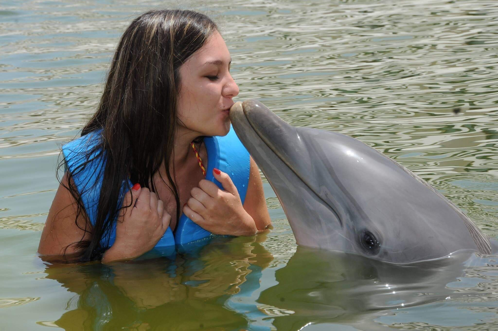
The dolphin’s skin felt so leathery!
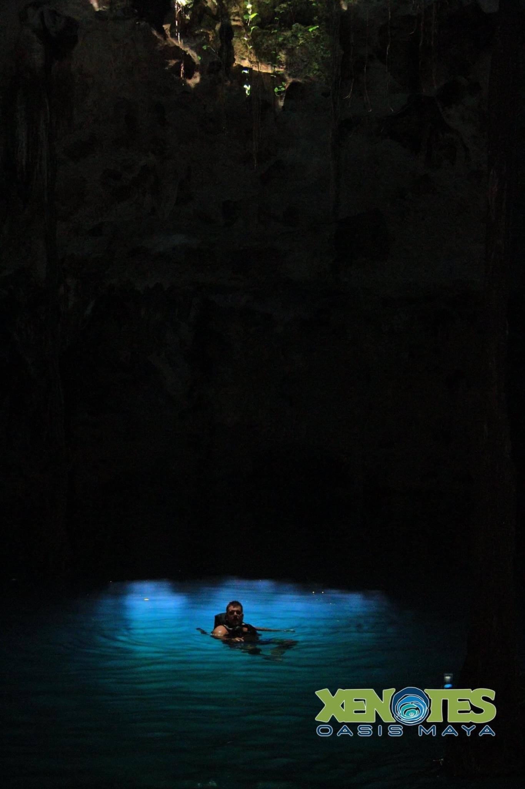
The water was so blue and beautiful.
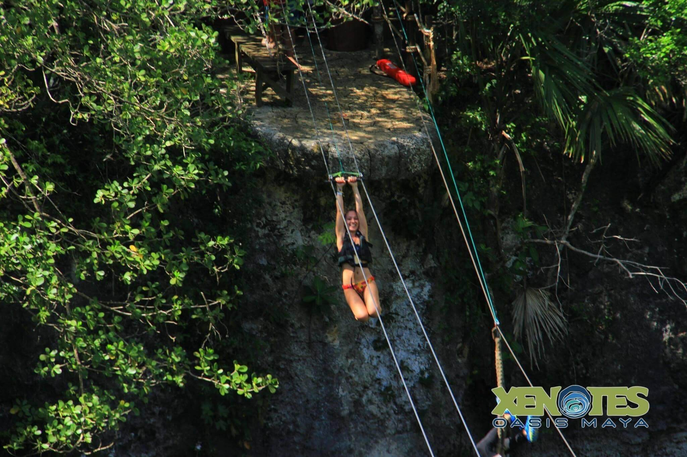
Zip lining was so much fun!
Europe, Summer 2017
Europe was always a dream of mine. I’ve always wanted to see the
Eiffel tower, the colosseum, and the various museums throughout. I
knew that planning to visit so many countries in such a short period
was a big undertaking, but I was ready. I planned the itinerary for
months and everything went quite smoothly, besides not being able to
see the Anne Frank house. One of my favorite artists is Van Gogh so
I really loved going to see his artwork in France. For this trip, I
flew out of MCO (Orlando) and had a layover in Manchester. After the
layover, I landed in Amsterdam, and it was like something out of a
movie. The air smelled so clean, and although it was still a little
cold and a grey, I managed to have a wonderful time. The first night
there I remember that we were outside walking around 11pm at night
and there was still sunlight! The highlights of Amsterdam were
Rembrandt Square, the coffee houses, The Heineken Experience, Madame
Tussaud’s wax museum, The Lookout (Europe’s highest swing at the
time), and the Rijksmuseum.
We were so high up! Also, RIP sneakers.
We took a canal cruise, and it was so much fun!
I loved the look of the houses in Amsterdam, they were actually very
similar to the houses in Copenhagen, Denmark.
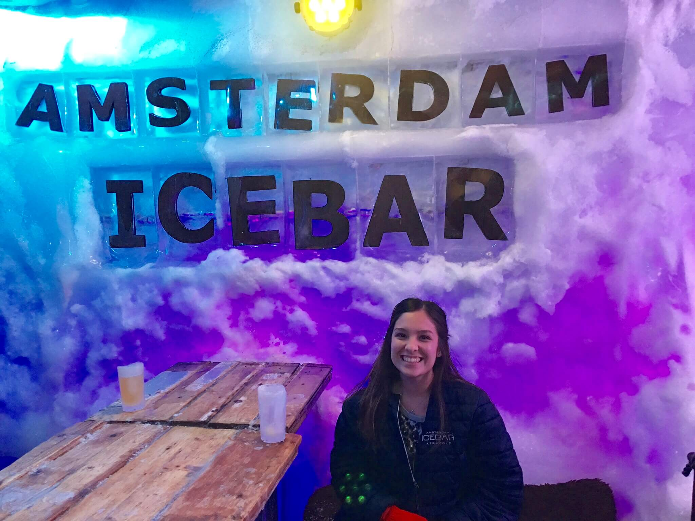
We quickly changed scenery after a couple of days and landed in
Rome. What I enjoyed most about Rome aside from the weather, was how
welcoming the people were. It reminded me a lot of Colombia. I also
found their cuisine exquisite and appreciated that we could drink a
carafe of wine for 5 euros. While here, the highlights were being
able to visit the Vatican City and see its museums, where
Michelangelo totally blew us away. I also loved seeing the statues
and the Galleria Borghese. The artists I admired most were
Caravaggio and Correggio.
What was most impressive about the sculptures were the details. I
remember on one of them, you could see the imprint of the man’s
fingers on the woman’s thighs, and it was stunning to know that this
artwork had survived so many years.
One of my favorite art pieces was the Pieta, which is the virgin
Mary carrying the body of Christ.
We weren’t supposed to take pictures of the Sistine Chapel but we
managed to sneak a camera in!
This is the Pieta.
After eating our way throughout Rome, we soon left and landed in
Paris. It was a late flight and I felt so happy to be greeted by the
shining Eiffel tower. The first time I saw it light up, I cried
because I felt successful in making my dreams come true. The food
was also really good in Paris, and my favorite were the escargot.
Some of the highlights from this city were the Catacombs, the Louvre
Museum, the Palace of Versailles, Notre Dame, the cruise on the
Siene, and being able to go to the top of the Eiffel tower where we
enjoyed glasses of champagne.
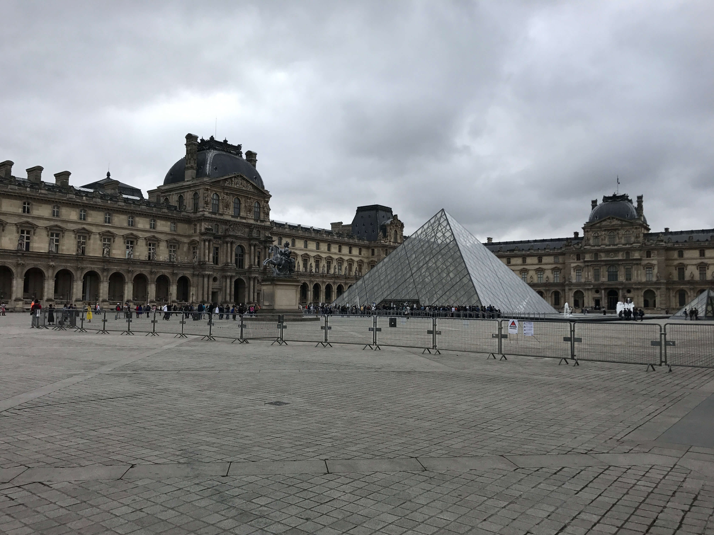
The Mona Lisa was much smaller and less impressive in person.
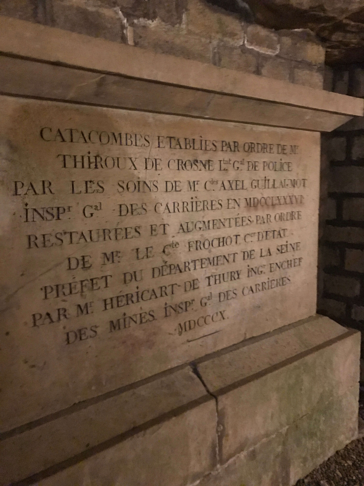
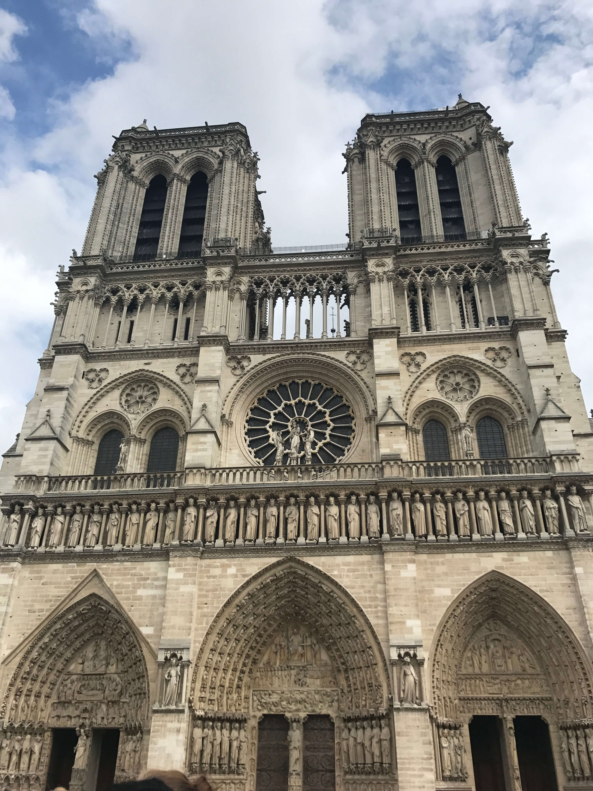
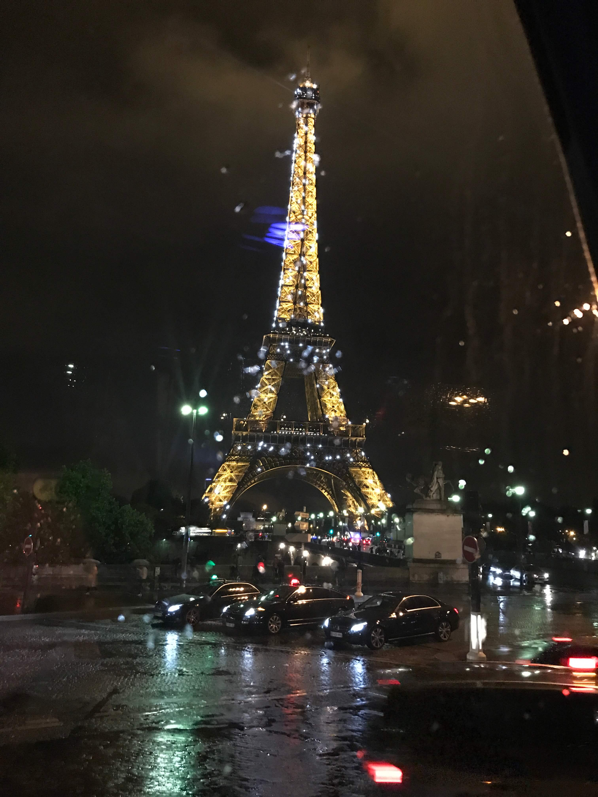
After leaving Paris, we landed in Copenhagen. We didn’t have much
planned for this city, except seeing the Little Mermaid. We also
wanted to take the Oresund bridge to cross over into Sweden, and the
train because the tunnel went underwater. I can’t remember much
about Sweden aside from its grey atmosphere, and Copenhagen wasn’t
too impressive either aside from the famous Nyhvan neighborhood. The
houses were so quaint!
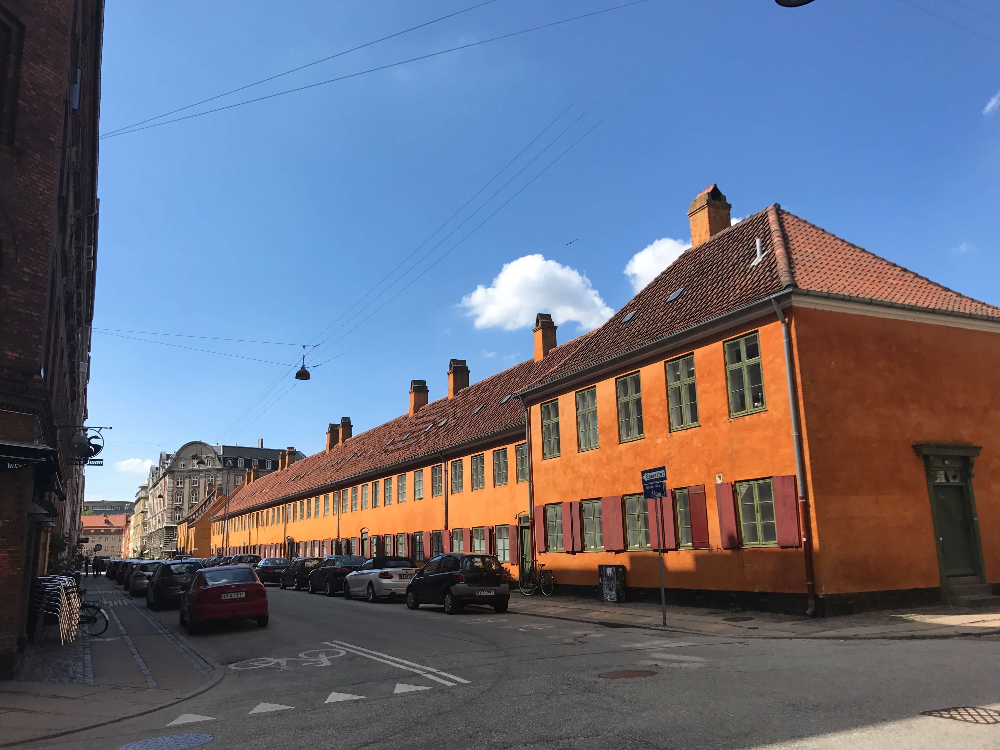
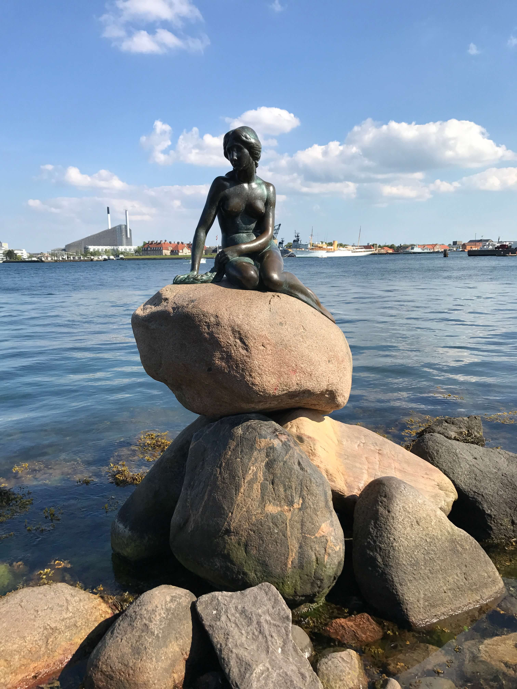
Malmo, Sweden.
Tropical Destinations
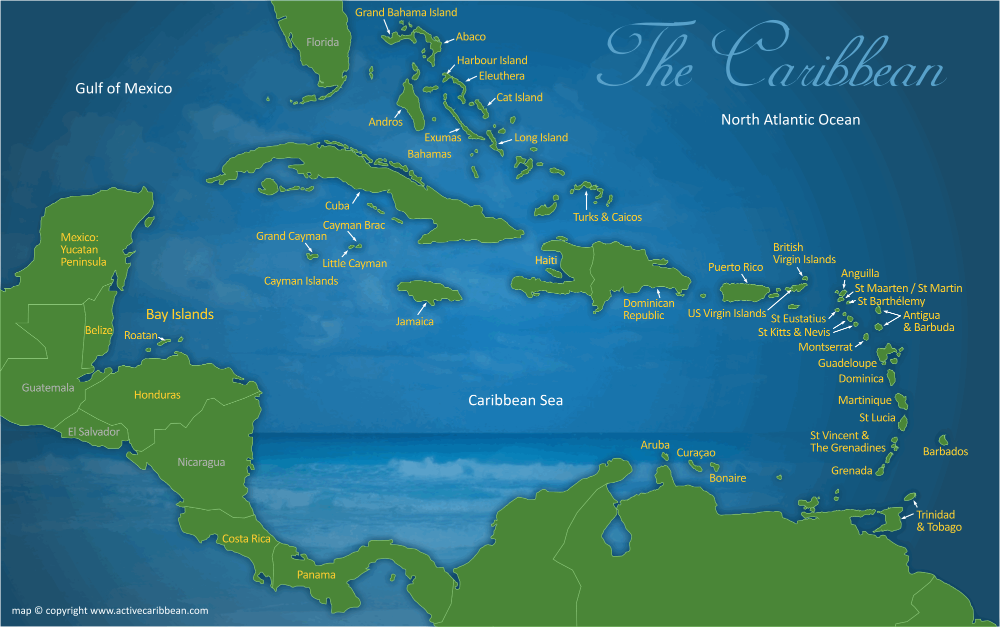
After being away for so long during the Europe trip, I wanted to
take a few more short trips with beach and relaxation involved. When
I turned 21, I bought tickets to go to Montego Bay and I stayed at
Sunset at The Palms. The beach there was so calm. Everyone was
friendly and the food was delicious. I remember jumping off the
cliffs in the ocean, snorkeling, going to Rick’s café, and spending
a day on the party boat/catamaran. This vacation though, was very
similar to a trip I planned two years later to Punta Cana in the DR
which is why I have grouped these together. The main difference
between these trips is that the heat/ sun in DR was much hotter and
intense. Also, the people in DR were all about the party and
drinking, whereas the Jamaicans were much more laid back. I recently
took a trip to Puerto Rico to celebrate my graduation. I think at
this point I have concluded that most tropical places are the same.
If you’ve seen one, you’ve seen them all. Doesn’t mean they’re not
fun though!

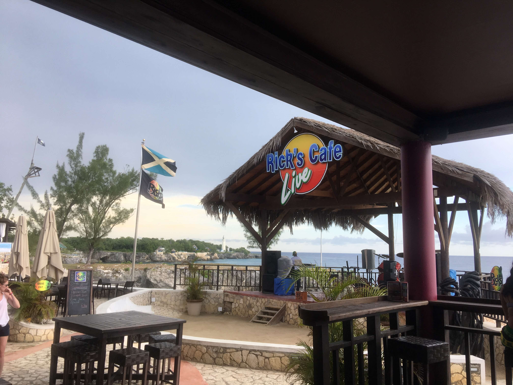
Negril, Jamaica.
More tropical adventures...this time closer to Haiti.
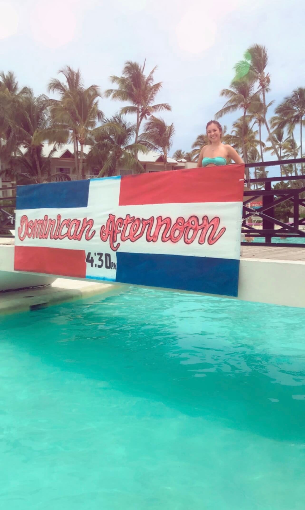
Punta Cana, 2019.
My most recent trip was to San Juan, Puerto Rico in May of 2023. I
think that alongside traveling, I also want to meet new animals. My
next trip, although I’m not sure when it is going to happen, will be
to South Africa.
San, Juan was a dream come true because I finally got to swim with
the sea turtles. I also got to hike all across the Yunke national
rainforest and see the bioluminescence.
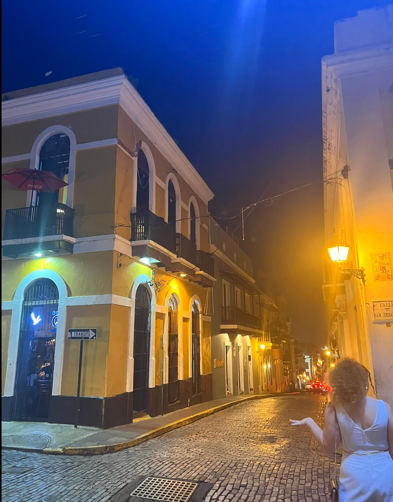
Oldtown San Juan.
Luquillo Beach
Yunke, National Rainforest in PR.
China, 2019.
A little out of chronological order, but I have included my China
trip last because it was the most freeing. I had to travel to Los
Angeles to catch a flight into Beijing in November of 2019 over
Thanksgiving weekend. I spent a few days in LA surfing and seeing
some landmarks. I also went on a mini cruise and got to see many of
the seals in Long Beach before I made my way over to China. The
flight was nonstop, but it was almost sixteen hours! When I landed
in Beijing, I got some lunch and was surprised to know that they had
a knock off version of red bull in small weirdly shaped cans for a
couple of Yen. My biggest surprise upon landing was that they had
squatting toilets. I never used one, I was too intimidated. The trip
to China was very long as well. It was almost 11 days where I got to
go all around China. This was also my first time traveling alone. I
was scared but ended up having a great time. The highlights of my
trip were seeing the Shanghai Skyline, climbing The Great Wall in
Beijing, going to the Forbidden City, and seeing the Chinese Opera.
I wasn’t too impressed with traditional Chinese food but loved the
duck and the dim sum.
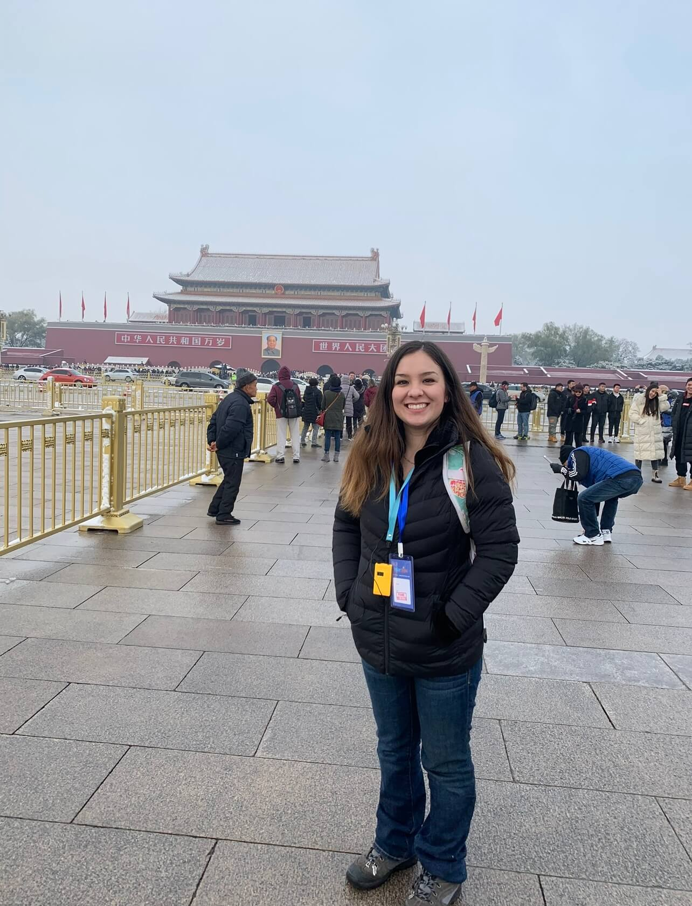
Where Mao Zedong’s body is buried.
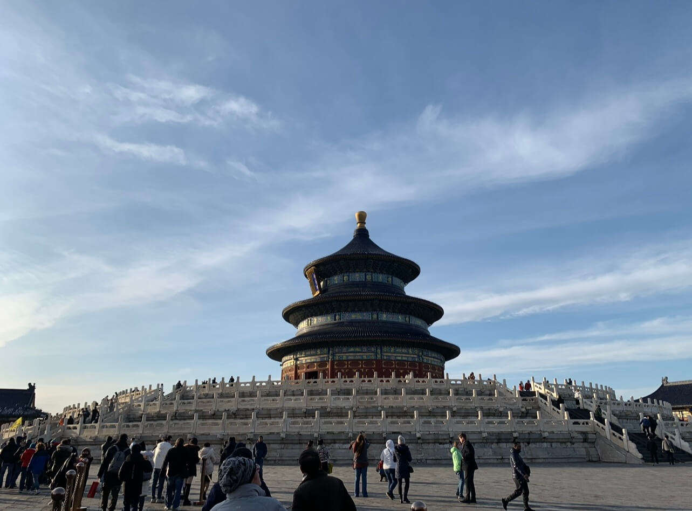
Temple of Heaven.
The Great Wall.
Chinese Opera with real life swans, peacock’s, and on stage
waterfalls.
The Terra Cotta Warriors.
It was also winter in China, so I was greeted by a mini snow storm
that turned everything much prettier.
The Venice of the Orient.
A beautiful night in Xian.
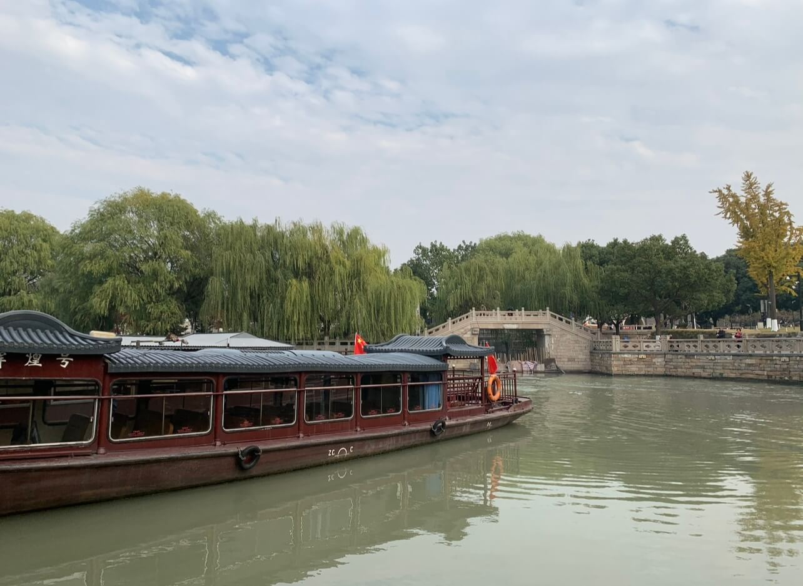
Another mini water cruise.
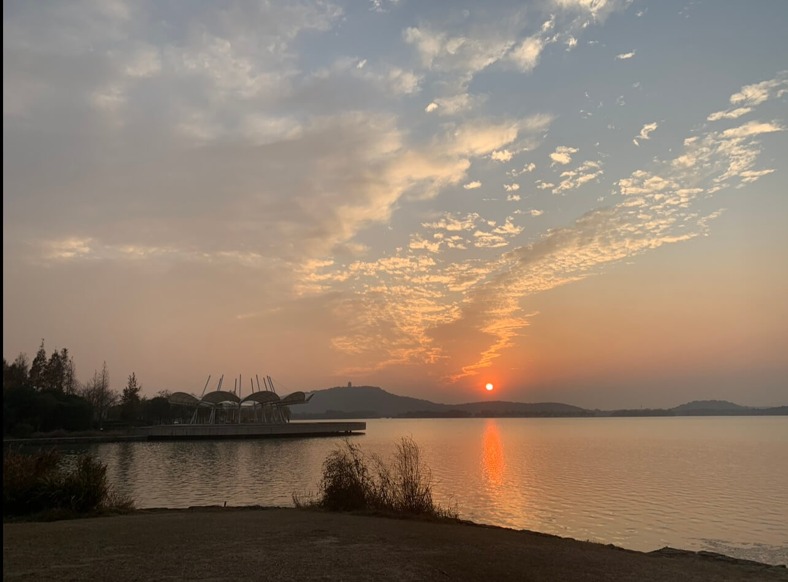
Another great sunset in a faraway place.
The Shanghai Skyline.